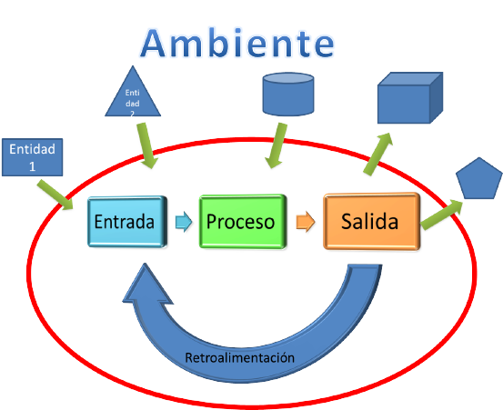
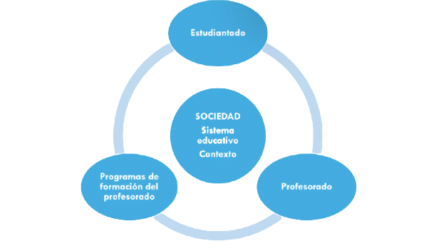
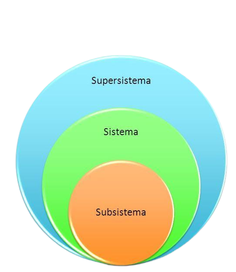
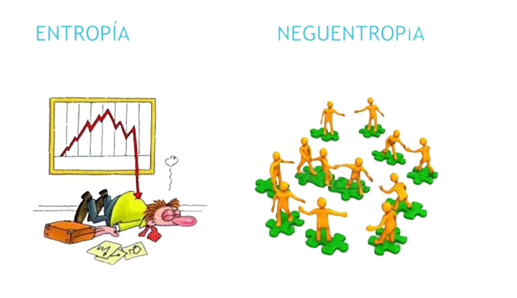
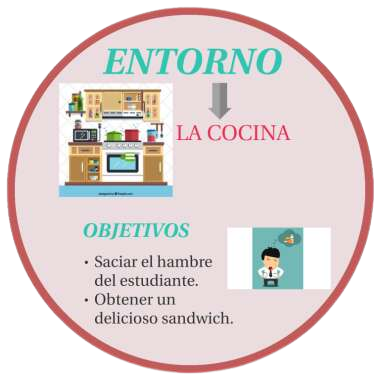

Conceptos Básicos
Las Teorías Generales de Sistemas (TGS) son un enfoque interdisciplinario que busca comprender y
explicar los patrones y propiedades comunes que existen en sistemas de diversos campos, como
biología, sociología, ingeniería, psicología, entre otros.Lgunos conceptos son:
1-Sistema: Un sistema se define como un conjunto de elementos interconectados que trabajan
juntos para lograr un objetivo común. Estos elementos pueden ser objetos, procesos, personas,
ideas, entre otros.
2-Entidad: Cada componente individual dentro de un sistema se conoce como una entidad.
Estas entidades interactúan y se relacionan de diversas formas para cumplir con el propósito
del sistema.
3-Interconexión e Interdependencia: Los elementos en un sistema están conectados entre sí a
través de relaciones y dependen mutuamente para su funcionamiento. Los cambios en una parte del
sistema pueden afectar otras partes.
Estos son algunos de los conceptos basico e importantes de la TGS

Elementos de Sistema
Dentro de la Teoría General de Sistemas (TGS), los conceptos de "Elementos de sistema", "Entropía" y "Neguentropía"
tienen significados específicos que se aplican al estudio de sistemas en diversos campos. A continuacion
explicare cada uno de los terminos:
-Elementos de Sistema:
En la TGS, los sistemas se componen de elementos interrelacionados que trabajan juntos para cumplir un
propósito o lograr un objetivo particular. Estos elementos pueden ser individuos, objetos, procesos,
componentes o cualquier entidad que contribuya al funcionamiento del sistema. La manera en que estos
elementos interactúan y se relacionan entre sí es esencial para entender cómo funciona el sistema en su
conjunto. La identificación y comprensión de los elementos de un sistema son fundamentales para analizar
y modelar su comportamiento.
Componentes de Sistema
Estos son los componentes de sistemas mas conocidos:
Interconexión:Los componentes de un sistema están interconectados y se influyen mutuamente.
Las interacciones entre componentes pueden ser directas o indirectas, pero todas contribuyen a
la funcionalidad del sistema.
Sinergia: La interacción entre componentes puede dar lugar a efectos sinérgicos, donde el
conjunto es más que la suma de las partes. Esto significa que la colaboración entre componentes
puede generar resultados que no podrían lograrse individualmente.
Estructura Jerárquica: Los sistemas pueden estar organizados en estructuras jerárquicas, donde
los componentes individuales forman subsistemas y, a su vez, estos subsistemas forman parte de
sistemas más grandes.
Emergencia: Los componentes individuales pueden dar lugar a propiedades emergentes a nivel del
sistema. Estas propiedades emergentes son características o comportamientos que surgen de las
interacciones entre los componentes y no pueden explicarse únicamente por el estudio de los componentes
individuales.
En resumen, los Componentes de Sistema en la TGS se refieren a las partes individuales y únicas
que conforman un sistema más grande. Comprender cómo estos componentes interactúan, se influyen
mutuamente y contribuyen a la funcionalidad global es esencial para analizar y modelar el
comportamiento de los sistemas en diversos campos.

Identificación de Subsistemas
se refiere al proceso de dividir un sistema más grande en componentes más pequeños y manejables
llamados subsistemas. Un subsistema es una parte del sistema que realiza una función específica y
puede tener sus propias interacciones y características internas.
La identificación de subsistemas es un paso fundamental en el análisis y la comprensión de sistemas
complejos, ya que permite descomponer un sistema en partes más simples y abordables. Esto facilita
el estudio detallado de cada subsistema por separado, así como el análisis de cómo interactúan y se
influyen mutuamente en el contexto del sistema global.Algunos aspectos clave de la Identificación de
Subsistemas en la TGS incluyen:
-Funcionalidad Específica: Cada subsistema realiza una función específica dentro del sistema más grande.
Estas funciones pueden ser tareas, procesos, operaciones o cualquier otro tipo de actividad necesaria
para lograr el objetivo del sistema.
-Interconexiones: Los subsistemas no son entidades aisladas, sino que están interconectados entre sí y
con el sistema en su conjunto. Las interacciones entre subsistemas pueden ser de diversas naturalezas,
como entradas y salidas de información, recursos compartidos o colaboración en la realización de tareas.
-Jerarquía: Los subsistemas pueden estar organizados en una estructura jerárquica. Un sistema puede
contener múltiples subsistemas, y estos subsistemas pueden a su vez estar compuestos por subsistemas
aún más pequeños.
-Enfoque Modular: La identificación de subsistemas permite abordar el análisis y el diseño de sistemas de
manera modular. Cada subsistema puede ser desarrollado, optimizado o mejorado por separado, lo que
facilita la gestión y el mantenimiento del sistema global.
-Complejidad Gestionable: Descomponer un sistema en subsistemas ayuda a manejar la complejidad del
sistema general. Los subsistemas más pequeños son más fáciles de entender y analizar que un sistema
completo y complejo.

Relaciones entre Partes y Propiedades Emergentes
En el marco de la Teoría General de Sistemas (TGS), las "Relaciones entre Partes" y las "Propiedades
Emergentes" son dos conceptos interrelacionados que desempeñan un papel fundamental en la comprensión
de cómo funcionan los sistemas complejos. Estos conceptos destacan cómo las partes individuales de un
sistema interactúan y cómo esas interacciones dan lugar a propiedades que no se pueden entender
simplemente observando las partes por separado. Veamos cada uno de estos conceptos en detalle:
-Relaciones entre Partes:
Las partes individuales de un sistema no existen en aislamiento; interactúan entre sí y establecen
conexiones que influyen en el comportamiento y el funcionamiento del sistema en su conjunto. Estas
interacciones pueden ser de naturaleza diversa y pueden incluir flujos de información, transferencia
de energía, intercambio de materiales o colaboración en la realización de tareas. Las relaciones
entre partes son esenciales para la dinámica y el funcionamiento del sistema, ya que determinan
cómo las partes individuales contribuyen al objetivo general del sistema y cómo se influyen
mutuamente.
-Propiedades Emergentes:
Las propiedades emergentes son características o cualidades que surgen como resultado de las
interacciones y las relaciones entre las partes de un sistema. Estas propiedades no se pueden deducir
directamente observando las partes individuales, sino que emergen como un efecto colectivo. En otras
palabras, el todo es más que la suma de las partes. Las propiedades emergentes pueden incluir
comportamientos, patrones, estructuras y fenómenos que son únicos para el sistema en su conjunto.
Estas propiedades emergentes a menudo son cruciales para comprender el sistema en su totalidad y no
pueden explicarse solamente analizando las partes por separado.
Las Relaciones entre Partes y las Propiedades Emergentes son conceptos esenciales en la Teoría
General de Sistemas. Las relaciones entre las partes individuales dan lugar a interacciones y
colaboraciones que, a su vez, generan propiedades emergentes que son características únicas del
sistema global. Estos conceptos resaltan la importancia de entender los sistemas en su totalidad y
cómo las partes trabajan juntas para crear un funcionamiento y un comportamiento complejos y
coordinados.
Entropía y Neguentropía
1-Entropía:
En el contexto de la TGS, la entropía se refiere a la medida del grado de desorden, caos o falta de
organización en un sistema. Es un concepto tomado de la termodinámica que se ha aplicado a diferentes
campos, incluida la teoría de sistemas. En sistemas, la entropía puede manifestarse como la pérdida de
energía útil o la disminución de la capacidad del sistema para realizar un trabajo ordenado. Un sistema
tiende a aumentar su entropía con el tiempo si no se realiza un esfuerzo para mantenerlo organizado y
funcional.
2-Neguentropía (o Entropía Negativa):
La neguentropía es un término introducido por el biólogo Ludwig von Bertalanffy, quien desarrolló laTeoría General de Sistemas. Se refiere al proceso mediante el cual un sistema vivo o un sistema en
general lucha contra la entropía, manteniendo o aumentando su nivel de orden y organización. En otras
palabras, la neguentropía representa la capacidad de un sistema para crear y mantener estructuras y
patrones organizados a pesar de la tendencia natural hacia la entropía. Los sistemas biológicos y
sociales a menudo exhiben neguentropía al mantener su estructura y funciones a lo largo del tiempo.

Ejemplos y Aplicaciones
La Teoría General de Sistemas (TGS) tiene una amplia gama de aplicaciones en diversos campos. A
continuación, te presento algunos ejemplos de cómo se aplica la TGS en diferentes áreas:
1-Biología y Ecología:
-Estudio de ecosistemas: Los ecosistemas son sistemas complejos compuestos por interacciones entreorganismos vivos y su entorno. La TGS se utiliza para analizar cómo las especies interactúan, cómo
fluyen los nutrientes y cómo se mantienen los equilibrios en estos sistemas.
-Biología de sistemas: La TGS se aplica en el estudio de sistemas biológicos, como redes metabólicas
y regulación genética, para comprender cómo las partes individuales interactúan y contribuyen a las
propiedades emergentes de la célula o el organismo.
2-Negocios y Administración:
-Administración de empresas: La TGS se usa para analizar organizaciones como sistemas complejos,considerando cómo los diferentes departamentos y equipos interactúan para lograr objetivos comunes.
-Gestión de proyectos: La TGS se aplica para comprender las relaciones entre las diferentes tareas
y componentes de un proyecto, así como para gestionar la colaboración y las interdependencias entre
ellos.
3-Ingeniería y Tecnología:
-Ingeniería de sistemas: La TGS se utiliza para diseñar sistemas complejos, como sistemas de control
automático, sistemas de información y sistemas de comunicación, teniendo en cuenta las interacciones
entre componentes.
-Ingeniería de software: La TGS se aplica en el desarrollo de software, considerando cómo los módulos
y componentes de software interactúan para crear un sistema funcional.
4-Medicina y Salud:
-Medicina de sistemas: La TGS se emplea para comprender cómo los órganos, tejidos y sistemas del cuerpo
interactúan y afectan la salud y el bienestar general de un individuo.
-Modelos epidemiológicos: En el estudio de enfermedades y su propagación, se utilizan modelos basados en
la TGS para analizar cómo las interacciones entre individuos pueden afectar la propagación de
enfermedades.
5-Psicología y Ciencias Sociales:
-Psicología de sistemas: La TGS se aplica para analizar cómo los individuos interactúan en relaciones y
grupos, considerando cómo estas interacciones influyen en el comportamiento y la dinámica de los sistemas
sociales.
-Sociología y antropología: La TGS se utiliza para estudiar cómo las interacciones entre individuos y
grupos contribuyen a la formación de estructuras sociales y culturales.
